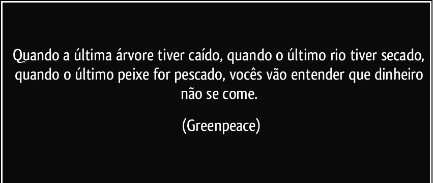

Energias limpas ou também conhecidas por renováveis, estão sendo alvo de grandes discussões e estudos para sua utilização, devido aos problemas ambientais que estamos sofrendo, ocasionados principalmente pela poluição, a utilização de energia limpa/renováveis passa a ser a melhor opção para obtermos resultados positivos e sem danos ambientais. Entendamos melhor porque de ser classificada como limpa/renováveis e como isso interfere na nossa vida e no meio ambiente.
Energias limpas/renováveis, em termos gerais é definida como o próprio nome diz, de matérias limpas e renováveis, ou seja, não poluentes e inesgotáveis. Temos como exemplo, o sol, o vento, além de resíduos de restos agrícolas e lixo orgânico, que são encontradas em grande escala e com abundancia, uma outra alternativa que foi considerada limpa para a produção de energia elétrica é o hidrogênio, pois ao ser utilizado como combustível deixa apenas vapor de água como resíduo.
As energias limpa/renováveis estão tendo um aumento considerável na sua utilização, em 2008 pesquisas feitas constataram que quase 20% do consumo de energia no mundo proveio de fontes renováveis, sendo 13% por biomassa e 3,2 pela hidroeletricidade. Além de que dos 18% da geração de energia elétrica por matérias renováveis, foram 15% de hidrelétricas no mundo e 3% são as novas energias renováveis.
São muitas as vantagens da utilização das energias renováveis, pois o país possui condições bastante favoráveis em relação de fontes renováveis, o que faz dispensar a importação, os benefícios consequentes do aumento no consumo de energias limpas/renováveis são muitos, dentre eles temos:
A grande questão problemática das energia limpa/renovável é quanto ao seu custo ainda muito elevado, mas se houver mais noção da necessidade da utilização deste tipo de energia, e o incentivo do governo em geral, é possível alcançarmos resultados favoráveis, pois “Se o governo está mesmo preocupado com a crise energética, deve criar incentivos fiscais para o desenvolvimento de energias alternativas”, diz Marcos Jank, presidente da Unica. E diferentemente do que pareça o uso de energias limpas/renováveis é algo que precisará de tempo, pois significa grande transformações, não somente a nós, como à economia e ao meio ambiente, pois “Estamos em plena reestruturação cultural. Serão necessários pelo menos 20 anos para transformar os hábitos em relação de energia”, diz Michael Liebreich, presidente da New Energy Finance, consultoria britânica, e um dos maiores especialistas do mundo em energia renovável.

Fontes: www.educacao.cc